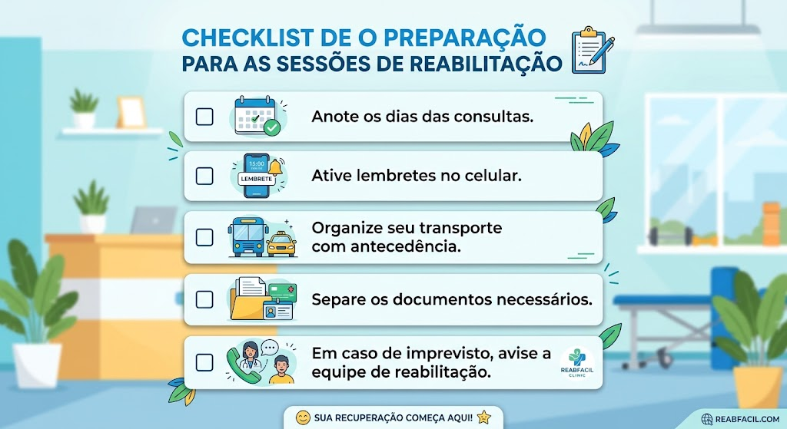

Reabilita+
Sua jornada rumo à recuperação começa aqui!
Bem-vindo(a)!
Este aplicativo foi desenvolvido para mostrar como sua presença nas sessões de reabilitação pode contribuir para uma recuperação mais eficiente e para a conquista de mais autonomia no dia a dia.
Cada passo importa
A reabilitação acontece um passo de cada vez.
Cada sessão representa uma nova oportunidade de aprender, evoluir e superar desafios.
Comparecer regularmente permite que o tratamento tenha continuidade e favorece o alcance dos objetivos definidos junto à equipe de reabilitação.
Entendendo a Reabilitação: Por que não devo faltar?
🧩 A reabilitação é um processo feito com você.
Cada pessoa tem necessidades e objetivos diferentes. Por isso, a equipe de reabilitação acompanha cada usuário de forma individual. Durante as sessões, são realizadas atividades e orientações de acordo com o que cada pessoa precisa.
📅 Por que é importante participar?
Cada sessão dá continuidade ao que foi trabalhado anteriormente. Quando você participa das sessões, a equipe consegue acompanhar seu desenvolvimento e orientar os próximos passos da reabilitação.
❤️ Sua participação também faz parte do tratamento. Sempre que possível, compareça às sessões. Se não puder comparecer, avise a equipe e siga as orientações recebidas para dar continuidade à reabilitação em casa.

Como sua presença faz diferença
❤️ Cada sessão é uma oportunidade de avançar.
Durante as sessões, você realiza atividades e recebe orientações de acordo com suas necessidades. A participação ajuda a equipe a acompanhar seu desenvolvimento e perceber o que pode ser trabalhado em cada etapa.
Com a continuidade das sessões, você pode:
- desenvolver novas habilidades;
- promover sua autonomia;
- melhorar a realização das atividades do dia a dia;
- fortalecer o vínculo com a equipe;
- fortalecer a autoestima;
- melhorar sua qualidade de vida.

O que acontece quando faltamos?
⚠️ As faltas podem atrapalhar a reabilitação.
Quando há muitas faltas, pode ficar mais difícil dar continuidade ao que está sendo trabalhado nas sessões. Isso pode atrasar o alcance dos objetivos da reabilitação.
Se você não puder comparecer, avise a equipe e siga as orientações recebidas para dar continuidade à reabilitação em casa.
Sua participação também é importante para o seu tratamento. Ao realizar as atividades, você ajuda no seu desenvolvimento e dá continuidade ao que foi trabalhado nas sessões.

Dicas para manter a frequência
Pequenas atitudes ajudam você a não esquecer das sessões.
- Anote os dias das consultas.
- Ative lembretes no celular.
- Organize seu transporte com antecedência.
- Separe os documentos necessários.
- Em caso de imprevisto, avise a equipe de reabilitação.

Você sabia?
Verdadeiro ou Falso?
"Faltar algumas sessões não interfere na reabilitação."
Sua conquista
Você é capaz de alcançar grandes conquistas!
Com dedicação, apoio da equipe e participação ativa no tratamento, é possível conquistar mais independência para realizar atividades do dia a dia e melhorar sua qualidade de vida.
Cada sessão aproxima você dos seus objetivos.

Uma mensagem para você
❤️ Você e sua família fazem parte da reabilitação.
A equipe está ao seu lado durante essa jornada.
Participar das sessões e seguir as orientações em casa ajuda a dar continuidade ao tratamento.
Juntos, podemos alcançar novas conquistas!
Encerramento
PARTICIPE DA SUA REABILITAÇÃO
Cada sessão é importante!
- 📅 Participe das sessões.
- 💙 Siga as orientações da equipe.
- 🏠 Faça em casa as atividades orientadas.
- 🌟 Faça sua parte na reabilitação.
“Cada passo de hoje ajuda nas conquistas de amanhã.”